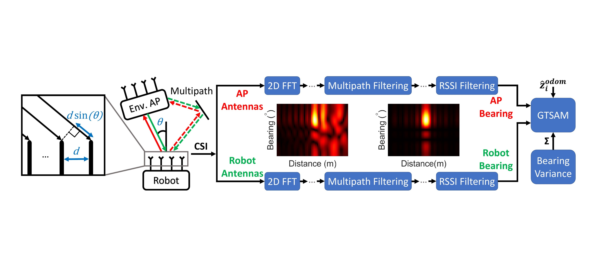
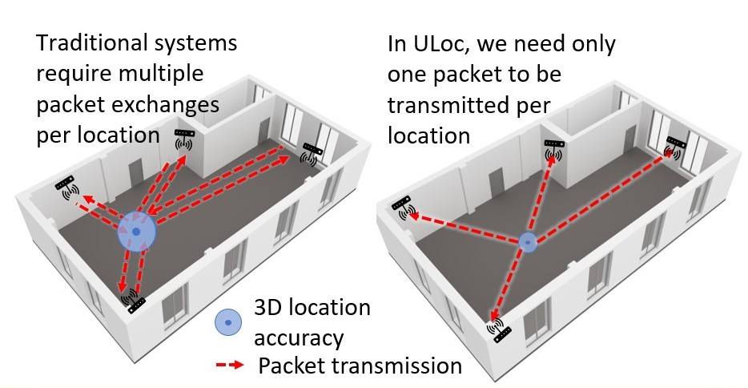
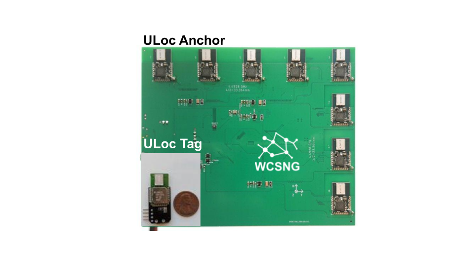
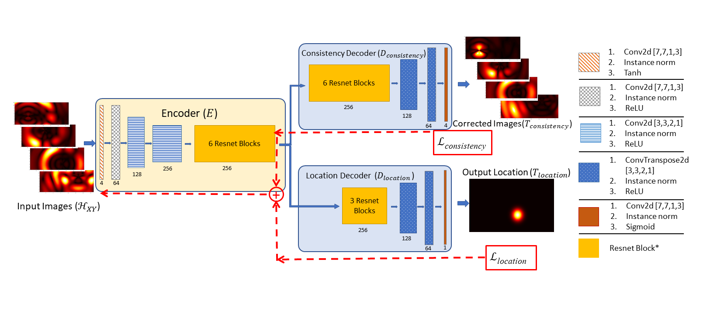
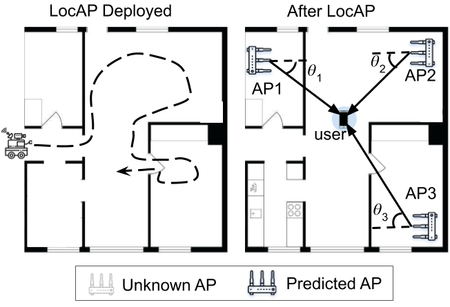

Research Vision
There has been an increasing demand for indoor robotics in the recent years. Robots have proved themselves to work well in constrained industrial settings and today there is a need to bring these robots to more unconstrained human spaces. And relaible operation in these messy environmnets will be the key to their success.
An important way to improve this much needed reliability is to develop new sensing modalities to better understand the environment. By incorporating RF-sensing, my reseach is helping push the envelope in developing new sensing modalities which can be readily integrated with today's robots. More details about my projects can be found below.
Apart from research, I enjoy spending extended periods of time cooking, hiking and sketching
Updates
- We are demoing extensions on our UWB-tracking project at Mobisys 2022. Stay tuned for more information!
- I will be presenting my work, P2SLAM, at ICRA during the Tuesday morning, 05/24/22, Sensor fusion track. It was recently accepted jointly with RAL-2022
- Our WiFi sensor fusion work, P2SLAM, was covered by Science Daily, Cosmos , EurekaAlert and UCSD News. The featured video can be found here.
Projects
WiFi radios as extrinsic sensors for Robot SLAM
Webpage
Extrinsic sensors, like cameras and LiDAR’s, employed for fusion are capable of correcting the drifts accumulated by wheel odometry or inertial measurement units (IMU’s) for robot localization and mapping. However, these exteroceptive sensors are deficient in highly structured environments and dynamic lighting conditions. We present WiFi as a robust and straightforward sensing modality capable of circumventing these issues.
-
P2SLAM: Bearing based WiFi SLAM for Indoor Robots
Aditya Arun, Roshan Ayyalasomayajula, William Hunter, Dinesh Bharadia
RAL 2022
Presented at ICRA 2022
[Paper]-[4-min video ]
cm-Accurate, Real time, and scalable UWB based Indoor 3D Localization
Webpage 
Since UWB has been developed as loclaization specific protocol, there has been a need for infrastructure based, low-power and real-time indoor localization while providing cm-Accurate 3D UWB tag locations. We solve these problems by novel hardware, firmware and algorithm designs. Where wedesigning our custom UWB anchor hardware and firmware that enables accurate 3D AoA, which we utilize to get cm-accurate 3D location using our novel algorithms.
- ULoc: Low-Power, Scalable and cm-Accurate UWB-Tag Localizationand Tracking for Indoor Applications
Minghui Zhao, Tyler Chang, Aditya Arun , Roshan Ayyalasomayajula, Chi Zhang, Dinesh Bharadia
IMWUT, 2021
Presented at Ubicomp, 2021
[Paper]-[20-min video]-[6-min video]-[Demo 1]-[Demo 2]-[Source] - Demo: Real-Time Low-Latency Tracking for UWB tags. In Proceedings of the 20th Annual International Conference on Mobile Systems, Applications, and Services
Aditya Arun, Tyler Chang, Yizheng Yu, Roshan Ayyalasomayajula, Dinesh Bharadia
Mobisys, 2022 (to be presented)
[Paper]-[Video]
Deep-Learning and Context assisted Indoor Wireless localization
Webpage
There has been a lot of work in Indoor WiFi localization in the past decade, with none of them being deployed in real-life. With this project we intend to bridge the gap between the real world maps and the WiFi maps and enable deep-learning based solution by allowing large scale data-collection.
- Deep Learning based Wireless Localization for Indoor Navigation
Roshan Ayyalasomayajula, Aditya Arun , Chenfeng Wu, Sanatan Sharma, Abhishek Sethi Deepak Vasisht, Dinesh Bharadia
ACM Mobicom, 2020
[paper]-[ppt]-[Video]-[codes]-[Datasets] - OpenSourcing: Wireless Indoor Localization Datasets (WILD)
Roshan Ayyalasomayajula, Aditya Arun , Chenfeng Wu, Dinesh Bharadia
[Datasets] - WAIP: Wireless AI Perception
Workshop at CVPR, 2022
[Website]-[competition]
Accurate Wi-Fi Anchor Localization
Webpage
With the advent of CSI based WiFi localization, the indoor localization paradigm has come down to decimenter level accurate location estiamtes. While this remains the case, the analysis and solution on how important the accurate anchor location is unresolved which is solved in this work.